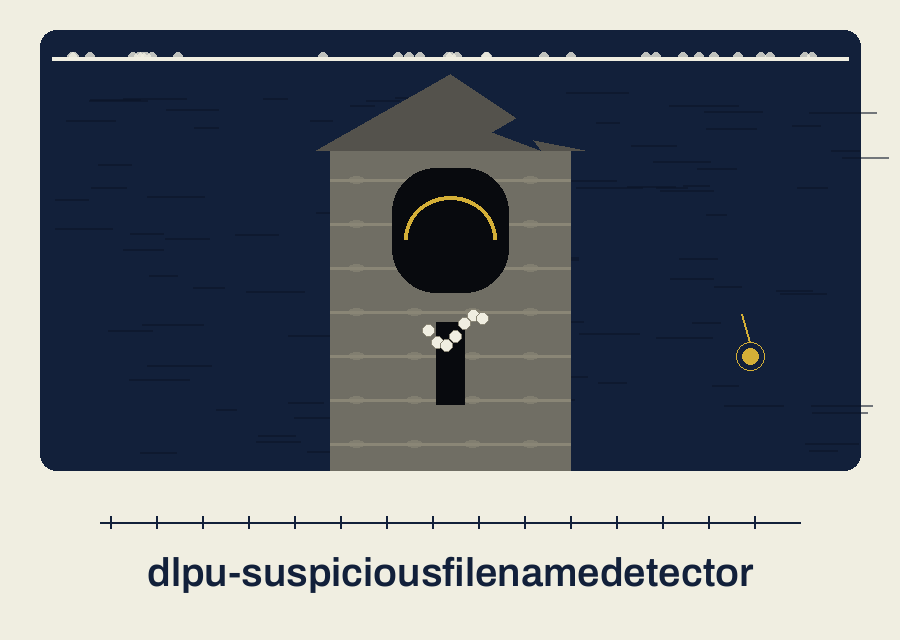

dlpu-suspiciousfilenamedetector: Sunken Cathedral of the Drowned Town

Names, Not Contents
One Folder Deep
Your Words Replace Ours
Paths, Reported Whole
Plate one: names, not contents
Given a directory, the program looks at the names of the files sitting directly in that directory. It flags a name when the name itself contains one of a set of keywords, matched without regard to letter case. It never opens the files. It never reads a single byte of their contents.
Plate two: a labelled correction
Correction. The README closing sales paragraph, in its opening account, claims the tool identifies and redacts or flags sensitive material such as addresses, numbers, and keys inside text files, logs, or traffic captures, with contextual analysis and sensitivity levels. None of that describes this program. This site replaces it with the plate one account: filename checking, one directory level, keyword matching, a list of flagged paths. The correction is shown as a correction, so a reader who met the README first can see exactly where the two accounts part.
Plate three: what a run needs
Python and its standard library only. The requirements file states that in one line and names no package.
Plate four: install, as it stands
The install line is printed as it stands in the preserved record below, because for this repo it stands correct. The clone line names ShadowGuard-AI, hyphenated, followed by the repo name. No correction is attached to it. Note: this line was put right by the merged README accuracy pass at the head of the current history, so its correctness is recent and deliberate, not original.
Plate five: the working form in placeholders
The interpreter call, then main.py, then a placeholder for the directory to inspect. Optional keyword and output controls may follow. No real directory path from any real machine is printed here, and no flagged path from any real run is printed here. Form: python3 main.py [directory to inspect]
Plate six: controls in parser order
Directory first, positional, required. Help next, in its short h form. Keywords follow, short k or long form, taking one or more values after the flag. Output closes the list, short o or long form, taking a path for the report file, and remaining optional.
Plate seven: how matching works
Matching is a plain substring search, letter case ignored, with each keyword treated as literal text rather than as a pattern, since the code escapes it before searching. There are no word boundaries. A keyword glued to other characters by underscores or digits still counts, which is deliberate for names of files, where such gluing is the normal style. Only the final component of a path is judged: the file own name. A keyword appearing in a folder name above the file contributes nothing. When a file is flagged, the full path is what gets stored and reported.
Plate eight: the keyword sets
Seven words are built in: SSN, creditcard, confidential, secret, password, api_key, apikey. Three of them are the examples the README itself prints: one for a national identifier, one written as a joined payment card word, and one marking material as confidential. The remaining four cover secrecy, passwords, and an application key written two ways, once with an underscore and once joined.
Supplying custom keywords replaces the built in set outright. It does not extend it. One custom word switches all seven built in checks off for that run.
Plate nine: reach and depth
The scan covers one level only. The directory listing is never descended into, so a flagged name sitting inside a subfolder is out of view entirely. Directories themselves are not judged, only entries that are files. This is a check of the names in one folder, not an audit of a tree.
Plate ten: reporting and endings
Without an output control, a run that finds flagged names prints a heading line and then each full path, one per line. A run that finds none prints a plain statement that no potentially sensitive files were found. With an output control, each flagged path is written to that file, one per line, and a saved confirmation prints. A directory argument that does not exist prints an error and ends at exit 1. A path that exists but is not a directory raises an invalid directory error inside the run, which is caught, printed as an error, and also ends at exit 1. A failure to write the report file prints an error and ends at exit 1.
Licence plate
The README licence sentence is printed as it stands: This project is released under the MIT License. See the LICENSE file for details. Beside it, the separate file fact. The LICENSE file carries the MIT License, and its holder line gives a pen name together with a single initial for the remaining name. The initial is not expanded here.
The interface kit
Buttons are cast as small sections of the tower itself: deep glass set over brass, in abyss indigo, shaped with the tower stepped roof profile along their top edge, and bordered by a hairline drawn from pressure gauge ticks. At rest the glass is dark. Hover warms the brass beneath it and the tick border takes anglerfish gold. Press deepens the indigo by one shade and holds it until release. No bubbles are emitted. Focus appears as a bone white double rule around the stepped outline. Links carry a short strand of pearls at their head: bone white at rest, touched with gold when the pointer arrives. Cards are nave panels: silt grey grounds, indigo heading band in Bruno Ace SC, Archivo text, and a tiny tower profile in the corner of any panel recording a finished scan, and on no other panel. Dividers inside the site are miniature scene strips drawn from the pressure gauge ticks, one strip per section break, fine at web weight.
The preserved README record
 # dlpu-SuspiciousFilenameDetector Analyzes filenames in a directory and flags files with names that resemble sensitive data (e.g., containing 'SSN', 'creditcard', 'confidential') using regular expressions and a configurable keyword list. Outputs a report of potentially sensitive files. - Focused on Identifies and redacts or flags sensitive data (e.g., email addresses, phone numbers, credit card numbers, API keys, domain names) from text files, logs, or network traffic captures. Employs regular expressions and contextual analysis to detect potentially leaked information. Supports customizable patterns and sensitivity levels. ## Install `git clone https://github.com/ShadowGuard-AI/dlpu-suspiciousfilenamedetector` ## Usage `python3 main.py directory [options]` ## Parameters - `directory`: The directory to analyze. - `-h`: Show help message and exit - `-k`, `--keywords`: Custom keywords to search for. - `-o`, `--output`: Output file for report (optional). ## License This project is released under the MIT License. See the [LICENSE](LICENSE) file for details.